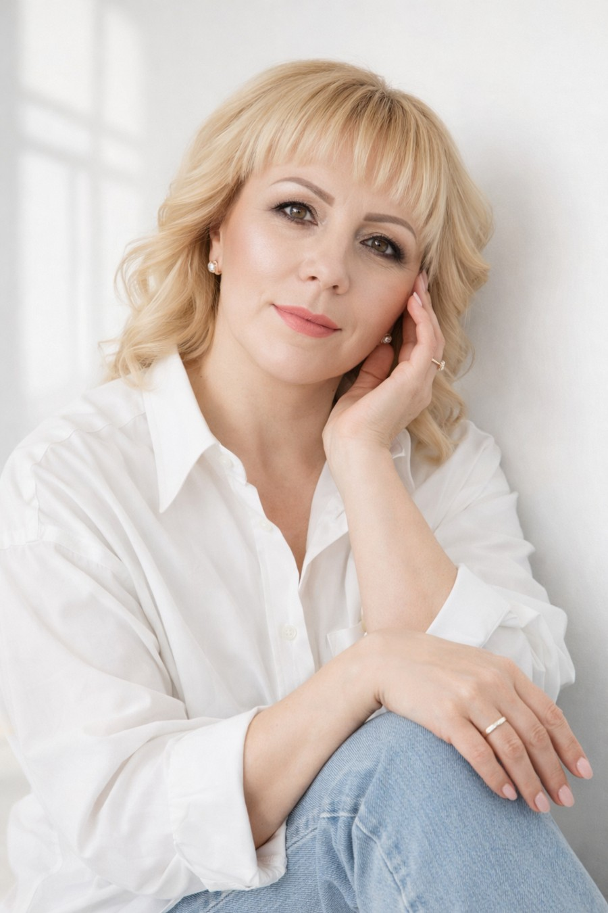

Ты чувствуешь, что в жизни что-то не так… и хочешь понять, почему
Астрология помогает увидеть глубинные причины событий: почему не идут деньги, не складываются отношения, не хватает сил или будто всё идёт не по твоему пути. Здесь ты найдёшь не только объяснение, но и мантры, камни и запись на консультацию.

Валентина
Ведический астролог. Помогаю увидеть глубинные причины событий, почувствовать ясность, опору и найти практики, которые поддерживают в жизни.
Мини-разбор: выбери, что тебя беспокоит
Это не полный разбор, а первое мягкое прикосновение к тому, что с тобой может происходить.
Нет денег
Чувство, что поток закрыт, а усилий много.
Проблемы в отношениях
Повторяются похожие сценарии и внутренние боли.
Нет энергии
Усталость, тревога и ощущение внутренней пустоты.
Денежный поток
Иногда деньги не идут не потому, что человек мало старается, а потому что внутри много напряжения, страха или сложный период.
Почему не идут деньги
Ты можешь много делать, но чувствовать, что результата всё равно недостаточно или всё даётся слишком тяжело.
Что может влиять
Внутренние страхи, слабая вера в себя, напряжённые периоды и влияние планет.
Что даёт разбор
Понимание, где именно закрывается поток, и какие практики могут помочь мягко его раскрыть.
Отношения и чувства
Если отношения не складываются или повторяются похожие болезненные сценарии, это тоже можно рассматривать глубже.
Повторяющиеся истории
Ожидание, боль, разочарование, дистанция — и будто один и тот же круг.
Влияние Венеры и Луны
Эти темы часто связаны с женской энергией, самоценностью, чувствами и внутренней безопасностью.
Что даёт консультация
Понимание причин, внутренних узлов и рекомендаций, которые помогают проживать тему легче.
Энергия и внутреннее состояние
Усталость, тревога, ощущение пустоты или потери себя — это не всегда “просто период”.
Нет сил
Даже обычные дела требуют слишком много ресурса.
Тревога и перегруз
Когда ум не выключается, тело устало, а душа будто оторвана от внутренней опоры.
Что помогает
Практики, астрологический разбор, мантры и понимание того, какой именно период ты проживаешь сейчас.
Мантры по планетам
Красивые мистические карточки с образами планет и кнопкой слушать.
Мантра Солнцу
Для усиления внутреннего света, уверенности, жизненной опоры и здоровья.
Мантра Луне
Для мягкости, внутреннего спокойствия, гармонизации эмоций и ощущения внутренней защищённости.
Мантра Меркурию
Для ясности мышления, коммуникации, деловых контактов, обучения и выстраивания полезных связей.
Мантра Венере
Для привлечения любви, мягкости, красоты, женской энергии и гармонизации сердечной сферы.
Мантра Марсу
Для усиления воли, решительности, энергии, смелости и внутреннего огня на действия.
Мантра Сатурну
Для спокойствия, устойчивости, внутренней зрелости и прохождения тяжёлых этапов.
Мантра Раху
Для успокоения сильного внутреннего напряжения, страхов и ощущения неустойчивости.
Мантра Кету
Для отпускания лишнего, работы с кармическими темами и внутреннего очищения.
Мантра Великого Победителя смерти
Сильная защитная и поддерживающая мантра в тяжёлые периоды и состояния.
Камни по знакам зодиака
Ниже — подборка камней и их качеств для каждого знака.
Овен
Телец
Близнецы
Рак
Лев
Дева
Весы
Скорпион
Стрелец
Козерог
Водолей
Рыбы
Как понять, какой камень подходит именно тебе?
Общие рекомендации могут откликаться, но самый точный выбор лучше делать по состоянию человека, его запросу и астрологическим показателям. На консультации можно посмотреть, какой камень лучше подойдёт именно под твою тему: деньги, отношения, спокойствие, защита или энергия.
Запись на консультацию
На сайте несколько точек входа специально, чтобы было легче решиться и не откладывать.
Написать в Telegram
Подходит, если хочешь быстро задать вопрос, записаться или уточнить формат консультации.
Написать в VK
Если Telegram работает нестабильно, можно спокойно связаться со мной через VK.